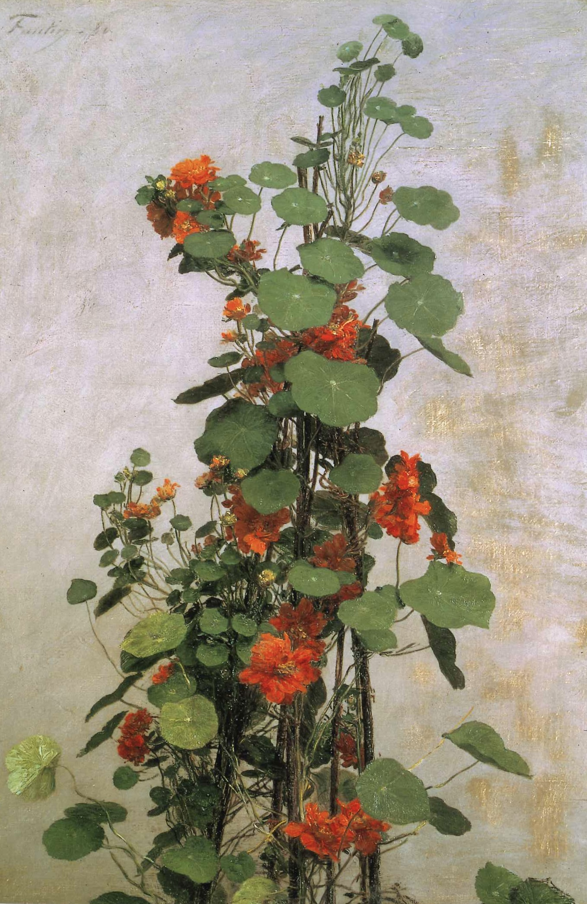

作品名 「ナスタチウム」
花言葉 「勝利」「愛国心」
ナスタチウム
「勝利」
初夏から初冬にかけて花が咲くナスタチウム、和名を金蓮花（キンレンカ）という。 葉が蓮の花に似ているところからつけられた名前である。花色は、オレンジ、黄色、赤で長い花柄に1輪ずつつき、5枚の花びらをもつ花を咲かせます。ナスタチウムの属名 Tropaeolum は、ギリシャ語の「tropaion（トロフィー）」からきている。ナスタチウムの丸い葉を盾に、赤い花を血に染まった鎧に見立て、「愛国心」「勝利」「困難に打ち克つ」という花言葉がつきました。
ナスタチウム
アンリ・ファンタン=ラトゥール
アンリ・ファンタン=ラトゥールは、19世紀フランスの画家であり、印象派運動の一員です。静物画、特に花を描いた作品で知られています。彼は印象派に属していながら、当時のトレンドに比べて従来的な技法を用いて描かれた作品を多く制作しました。
| 作品名 | ナスタチウム |
| 作者 | アンリ・ファンタン=ラトゥール |
| 制作年 | 1880年 |
| 種類 | キャンバス・油彩 |
| 寸法 | 62.8cm × 42.5cm |
| 所蔵 | ヴィクトリア・アンド・アルバート美術館 |